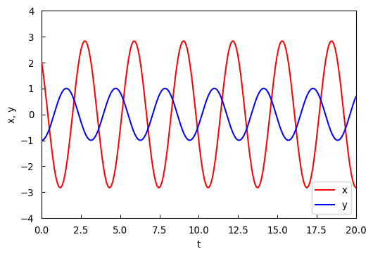
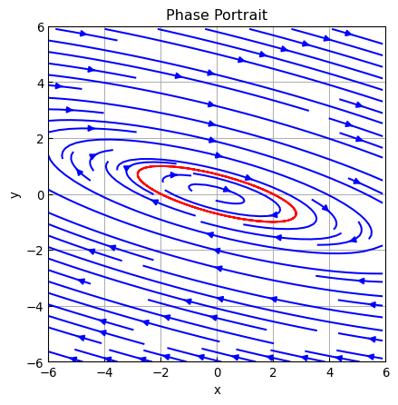

import numpy as np
import matplotlib.pyplot as plt
w = 6
xl = np.arange(-w, w, 0.1)
yl = np.arange(-w, w, 0.1)
x, y = np.meshgrid(xl, yl)
xdot = 2*x +3*y
ydot = 2*x +y
y_1 = -xl
y_2 = 2/3 *xl7 Systems of Linear Differential Equations
7.1 Theory of Linear Systems
Here we confine our study to systems of first-order DEs that are special cases of systems that have the normal form
\[ \begin{aligned} \frac{d x_1}{dt} &= g_1(t, x_1, x_2, \cdots, x_n) \\ \frac{d x_2}{dt} &= g_2(t, x_1, x_2, \cdots, x_n) \\ &\;\vdots \\ \frac{d x_n}{dt} &= g_n(t, x_1, x_2, \cdots, x_n) \end{aligned}\]
This system is called a first-order system
When each of the functions \(\,g_i\), \(i=1,\cdots,n\), is linear in the dependent variables \(x_i\), \(i=1,\cdots,n\), \(\,\) we get the normal form of a first-order system of linear equations
\[ \begin{aligned} \frac{d x_1}{dt} &= a_{11}(t) x_1 +a_{12}(t) x_2 +\cdots +a_{1n}(t) x_n +f_1(t) \\ \frac{d x_2}{dt} &= a_{21}(t) x_1 +a_{22}(t) x_2 +\cdots +a_{2n}(t) x_n +f_2(t) \\ &\;\vdots \\ \frac{d x_n}{dt} &= a_{n1}(t) x_1 +a_{n2}(t) x_2 +\cdots +a_{nn}(t) x_n +f_n(t) \\ \end{aligned} \tag{LS}\label{eq:LS}\]
We refer to \(\eqref{eq:LS}\) simply as a linear system. We assume that the coefficient \(a_{ij}(t)\) as well as the functions \(f_i(t)\) are continuous on a common interval \(I\). When \(f_i(t)=0\), \(i=1,\cdots,n\), \(\,\) the linear system is said to be homogeneous; otherwise it is nonhomogeneous
If \(\,\mathbf{x}\), \(\mathbf{A}\), and \(\mathbf{f}\) denote the respective matrices
\[ \mathbf{x}= \begin{pmatrix} x_1 \\ x_2 \\ \vdots \\ x_n \end{pmatrix}, \; \mathbf{A}= \begin{pmatrix} a_{11} & a_{12} & \cdots & a_{1n}\\ a_{21} & a_{22} & \cdots & a_{2n}\\ \vdots & & & \vdots \\ a_{n1} & a_{n2} & \cdots & a_{nn} \end{pmatrix}, \; \mathbf{f} = \begin{pmatrix} f_1 \\ f_2 \\ \vdots \\ f_n \end{pmatrix}\]
then the system of linear first-order DEs can be written as
\[\frac{d\mathbf{x}}{dt}=\mathbf{A}\mathbf{x} +\mathbf{f} \tag{LSM}\label{eq:LSM}\]
A solution vector of \(\eqref{eq:LSM}\) can be interpreted geometrically as a set of parametric equations of a space curve. In the case \(n=2\) and \(n=3\), the equations \(x_1=\phi_1(t)\), \(x_2=\phi_2(t)\), and \(x_1=\phi_1(t)\), \(x_2=\phi_2(t)\), \(x_3=\phi_3(t)\) represent curves in 2-space and 3-space, respectively. It is common practice to call such a solution curve a trajectory. The plane is also called the phase plane
Initial-Value Problem
Let \(\,t_0\) denote a point on an interval \(I\) and
\[\mathbf{x}_0=\begin{pmatrix} \gamma_1 \\ \gamma_2 \\ \vdots \\ \gamma_n \end{pmatrix}\]
where \(\gamma_i\), \(i=1,\cdots,n\) are given constants. Then the problem
\[\frac{d\mathbf{x}}{dt}=\mathbf{A}(t)\mathbf{x} +\mathbf{f}(t), \;\; \mathbf{x}(t_0)=\mathbf{x}_0\]
is an initial-value problem on the interval. Here there exists a unique solution of the initial-value problem if the entries of \(\mathbf{A}\) and \(\mathbf{f}\) are the continuous functions on a common interval \(\,I\)
Superposition Principle
Let \(\,\mathbf{x}_1\), \(\mathbf{x}_2\), \(\cdots\), \(\mathbf{x}_k\,\) be a set of solution vectors of the homogeneous system
\[\frac{d\mathbf{x}}{dt}=\mathbf{A}(t)\mathbf{x}\]
on an interval \(\,I\). Then the linear combination
\[ \mathbf{x}=c_1\mathbf{x}_1 +c_2\mathbf{x}_2 +\cdots +c_k\mathbf{x}_k \]
where \(c_i\), \(i=1,2,\cdots,k,\) are arbitrary constants, is also a solution on the interval
We can introduce the concept of the Wronskian determinant as a test for linear independence. Let \(\,\mathbf{x}_1\), \(\mathbf{x}_2\), \(\cdots\), \(\mathbf{x}_n\) be \(n\) solution vectors of the homogeneous system on \(I\). Then the set of solution vectors is linearly independent on \(I\,\) if and only if the Wronskian
\[\scriptsize W(\mathbf{x}_1, \mathbf{x}_2, \cdots, \mathbf{x}_n)= \begin{vmatrix} x_{11} & x_{12} & \cdots & x_{1n} \\ x_{21} & x_{22} & \cdots & x_{2n} \\ \vdots & & & \vdots \\ x_{n1} & x_{n2} & \cdots & x_{nn} \end{vmatrix} \neq 0 \]
for every \(t\) in the interval.
For every \(t\) in \(I\), either \(W(\mathbf{x}_1\), \(\mathbf{x}_2\), \(\cdots\), \(\mathbf{x}_n)\neq 0\) or \(W(\mathbf{x}_1\), \(\mathbf{x}_2\), \(\cdots\), \(\mathbf{x}_n)= 0\). Thus if we can show that \(W\neq 0\) for some \(t_0\) in \(I\), \(\,\) then \(W\neq 0\) for every \(t\), \(\,\)hence the set of solutions is linearly independent on the interval
Any set of \(n\) linearly independent solution vectors of the homogeneous system on an interval \(I\) is said to be a fundamental set of solutions. Then the general solution of the homogeneous system is
\[\mathbf{x}=c_1 \mathbf{x}_1 +c_2 \mathbf{x}_2 +\cdots +c_n \mathbf{x}_n\]
where \(c_i\), \(i=1,2,\cdots,n\) are arbitrary constants
General Solution of the Nonhomogeneous System
For nonhomogeneous systems, a particular solution \(\mathbf{x}_p\) on an interval \(I\) is any vector, free of arbitrary parameters, whose entries are functions that satisfy system \(\text{(LSM)}\). Let
\[\mathbf{x}_h=c_1 \mathbf{x}_1 +c_2 \mathbf{x}_2 +\cdots +c_n \mathbf{x}_n\]
denote the general solution of the associated homogeneous system. Then the general solution of the nonhomogeneous system is
\[\mathbf{x}=\mathbf{x}_h +\mathbf{x}_p\]
7.2 Homogeneous Linear Systems
\(~\)
For the general homogeneous linear first-order system
\[\frac{d\mathbf{x}}{dt}=\mathbf{A}\mathbf{x} \tag{HE}\label{eq:HE}\]
we are prompted to ask whether we can always find a solution of the form
\[\mathbf{x}=\begin{pmatrix} k_1 \\ k_2 \\ \vdots \\ k_n \end{pmatrix} e^{\lambda t} =\mathbf{k} e^{\lambda t} \tag{SL}\label{eq:SL}\]
If \(\eqref{eq:SL}\) is to be a solution vector of the system, then
\[ \begin{aligned} \displaystyle \frac{d \mathbf{x}}{dt}&= \mathbf{A}\mathbf{x} \\ &\Downarrow \;\;\mathbf{x}=\mathbf{k}e^{\lambda t} \\ \lambda \mathbf{k} e^{\lambda t}&= \mathbf{A} \mathbf{k} e^{\lambda t}\\ &\Downarrow \;\; \div \,e^{\lambda t} \\ (\mathbf{A} -\lambda \mathbf{I}) \mathbf{k} &= \mathbf{0} \end{aligned} \tag{CE}\label{eq:CE}\]
In order for \(\eqref{eq:CE}\) to have solutions other than the obvious trivial solution \(\mathbf{k}=\mathbf{0}\), \(\,\)we must have
\[\mathrm{det}(\mathbf{A} -\lambda\mathbf{I})=0\]
This polynomial equation of \(\lambda\) is called the characteristic equation of \(\mathbf{A}\); its solutions are the eigenvalues of \(\mathbf{A}\). A solution \(\mathbf{k}\neq \mathbf{0}\) of \(\eqref{eq:CE}\) corresponding to an eigenvalue \(\lambda\) is called an eigenvector of \(\mathbf{A}\)
Distinct Real Eigenvalues
When \(\mathbf{A}\) possesses \(n\) distinct real eigenvalues \(\lambda_i\), \(i=1,2,\cdots,n\), \(\,\)then a set of \(n\) linearly independent eigenvectors \(\mathbf{k}_1\), \(\mathbf{k}_2\), \(\cdots\), \(\mathbf{k}_n\) can always be found and
\[\mathbf{x}_1=\mathbf{k}_1 e^{\lambda_1 t}, \mathbf{x}_2=\mathbf{k}_2 e^{\lambda_2 t}, \cdots, \mathbf{x}_n=\mathbf{k}_n e^{\lambda_n t}\]
is a fundamental set of solutions of the homogeneous system \(\eqref{eq:HE}\) on \((-\infty,\infty)\)
\(~\)
Example \(\,\) Solve
\[\left.\begin{array}{cl} &\displaystyle\frac{dx}{dt} = 2x +3y\\ &\displaystyle\frac{dy}{dt} = 2x +y \end{array}\right. \;\; \Rightarrow \;\;\displaystyle \frac{d\mathbf{x}}{dt}=\mathbf{A}\mathbf{x}, \;\mathbf{A}= \begin{pmatrix} 2 & 3\\ 2 & 1 \end{pmatrix}, \;\mathbf{x}=\begin{pmatrix} x \\ y \end{pmatrix}\]
From the characteristic equation
\[\mathrm{det}\,(\mathbf{A} -\lambda\mathbf{I})= \begin{vmatrix} 2 -\lambda & 3\\ 2 & 1 -\lambda \end{vmatrix} =(\lambda +1)(\lambda -4)=0 \]
Now for \(\lambda_1=-1\),
\[ \begin{pmatrix} 3 & 3\\ 2 & 2 \end{pmatrix} \begin{pmatrix} k_1 \\ k_2 \end{pmatrix} =\begin{pmatrix} 0 \\ 0 \end{pmatrix} \]
Thus \(\,k_1=-k_2\). \(\,\)When \(k_2=-1\), \(\,\)the related eigenvector is
\[\mathbf{k}_1=\begin{pmatrix} \;\;1 \\ -1 \end{pmatrix}\]
For \(\lambda_2=4\),
\[ \begin{pmatrix} -2 & \;\;3\\ \;\;2 & -3 \end{pmatrix} \begin{pmatrix} k_1 \\ k_2 \end{pmatrix} =\begin{pmatrix} 0 \\ 0 \end{pmatrix} \]
so that \(k_1=\frac{3}{2}k_2\), \(\,\)and therefore with \(k_2=2\), \(\,\)the corresponding eigenvector is
\[\mathbf{k}_2=\begin{pmatrix} 3 \\ 2 \end{pmatrix}\]
Since we have found two linearly independent solutions
\[\mathbf{x}_1=\begin{pmatrix} \;\;1 \\ -1 \end{pmatrix} e^{-t} \;\text{ and }\; \mathbf{x}_2=\begin{pmatrix} 3 \\ 2 \end{pmatrix}e^{4t}\]
the general solution of the system is
\[\mathbf{x}=c_1 \mathbf{x}_1 +c_2\mathbf{x}_2\]
fig, ax = plt.subplots(figsize=(5, 5))
ax.streamplot(x, y, xdot, ydot, color='blue')
ax.plot(xl, y_1, 'r:', xl, y_2, 'r:')
ax.set_title('Phase Portrait')
ax.axis((-w, w, -w, w))
ax.set_xlabel('x')
ax.set_ylabel('y')
ax.grid()
ax.tick_params(axis='both', direction='in')import pprint
A = np.array([[2, 3], [2, 1]])
ld, k = np.linalg.eig(A)
print('Eigenvalues =', end = ' '); pprint.pprint(ld)
print('Eigenvectors ='); pprint.pprint(k)Eigenvalues = array([ 4., -1.])
Eigenvectors =
array([[ 0.83205029, -0.70710678],
[ 0.5547002 , 0.70710678]])import sympy
sympy.init_printing()
A_ = sympy.Matrix(A)
A_.eigenvects()\(\displaystyle \left[ \left( -1, \ 1, \ \left[ \left[\begin{matrix}-1\\1\end{matrix}\right]\right]\right), \ \left( 4, \ 1, \ \left[ \left[\begin{matrix}\frac{3}{2}\\1\end{matrix}\right]\right]\right)\right]\)
\(~\)
Example \(\,\)Use python to obtain the phase portraits of the systems
\(~\)
\(~\)
\[\text{Attractor}\]
\[ \begin{aligned} \frac{dx}{dt} &=-\frac{5}{2}x +2y\\ \frac{dy}{dt} &= \frac{3}{4}x -2y \end{aligned}\]
\[\text{Repeller}\]
\[ \begin{aligned} \frac{dx}{dt} &= 2x +2y\\ \frac{dy}{dt} &= x +3y \end{aligned}\]
\(~\)
\(~\)
Repeated Eigenvalues
For an \(n \times n\) matrix \(\mathbf{A}\), if \(m\) is a positive integer and \((\lambda -\lambda_1)^m\) is a factor of the characteristic equation while \((\lambda -\lambda_1)^{m +1}\) is not a factor, then \(\lambda_1\) is said to be an eigenvalue of multiplicity \(m\)
It may be possible to find \(m\) linearly independent eigenvectors \(\,\) \(\mathbf{k}_1\), \(\mathbf{k}_2\), \(\cdots\), \(\mathbf{k}_m\) corresponding to an eigenvalue \(\lambda_1\) of multiplicity \(m \leq n\). In this case, the general solution contains the linear combination
\[c_1 \mathbf{k}_1 e^{\lambda_1 t} +c_2 \mathbf{k}_2 e^{\lambda_1 t} +\cdots +c_m \mathbf{k}_m e^{\lambda_1 t}\]
If there is only one eigenvector corresponding to the eigenvalue \(\lambda_1\) of multiplicity \(m\), then \(m\) linearly independent solutions of the form
\[ \begin{aligned} \mathbf{x}_1 &= \mathbf{k}_{11} e^{\lambda_1 t}\\ \mathbf{x}_2 &= \mathbf{k}_{11} t e^{\lambda_1 t} +\mathbf{k}_{12} e^{\lambda_1 t}\\ &\vdots\\ \mathbf{x}_m &= \mathbf{k}_{11} \frac{t^{m-1}}{(m-1)!} e^{\lambda_1 t} +\mathbf{k}_{12} \frac{t^{m-2}}{(m-2)!} e^{\lambda_1 t} +\cdots +\mathbf{k}_{1m} e^{\lambda_1 t} \end{aligned}\]
can always be found
\(~\)
Example \(\,\) Solve
\[ \mathbf{x}' = \left(\begin{array}{rrr} 1 & -2 & 2 \\ -2 & 1 &-2 \\ 2 & -2 & 1 \end{array}\right)\mathbf{x}\]
The characteristic equation
\[\mathrm{det}(\mathbf{A}-\lambda \mathbf{I}) = \left|\begin{array}{ccc} 1-\lambda & -2 & \;\;2 \\ -2 & 1-\lambda &-2 \\ \;\;2 & -2 & 1-\lambda \end{array}\right|=0 \]
yields \(-(\lambda+1)^2(\lambda-5)=0\). \(\,\) Then \(\lambda_1=\lambda_2=-1\) and \(\lambda_3=5\)
For \(\lambda_1=\lambda_2=-1\), \(\,\) we have
\[ (\mathbf{A} +\mathbf{I}|\mathbf{0}) = \left(\begin{array}{rrr|r} 2 & -2 & 2 & 0\\ -2 & 2 & -2 & 0\\ 2 & -2 & 2 & 0 \end{array}\right) \overset{\text{row operations}}{\Longrightarrow} \left(\begin{array}{rrr|r} 1 & -1 & 1 & 0\\ \hline 0 & 0 & 0 & 0\\ 0 & 0 & 0 & 0 \end{array}\right) \]
The first row of the last matrix means \(k_1 -k_2 +k_3=0\). \(\,\)By choosing \(k_2=1\), \(k_3=0\) and \(k_2=1\), \(k_3=1\), two linearly independent eigenvectors corresponding to \(\lambda_1\)
\[\mathbf{k}_1= \left(\begin{array}{r} 1\\ 1\\ 0 \end{array}\right) \; \text{ and } \; \mathbf{k}_2= \left(\begin{array}{r} 0\\ 1\\ 1 \end{array}\right) \]
are obtained
Last, for \(\lambda_3=5\), \(\,\)the Gauss elimination
\[ (\mathbf{A} -5\mathbf{I}|\mathbf{0}) = \left(\begin{array}{rrr|r} -4 & -2 & 2 & 0\\ -2 & -4 & -2 & 0\\ 2 & -2 & -4 & 0 \end{array}\right) \overset{\text{row operations}}{\Longrightarrow} \left(\begin{array}{rrr|r} 1 & 0 &-1 & 0\\ 0 & 1 & 1 & 0\\ \hline 0 & 0 & 0 & 0 \end{array}\right) \]
implies \(k_1=k_3\) and \(k_2=-k_3\). Picking \(k_3=1\) gives \(k_1=1\), \(k_2=-1\), and thus a third eigenvector is
\[\mathbf{k}_3= \left(\begin{array}{r} 1\\ -1\\ 1 \end{array}\right) \]
Thus we conclude that the general solution is
\[\mathbf{x}= c_1\left(\begin{array}{r} 1\\ 1\\ 0 \end{array}\right)e^{-t} + c_2\left(\begin{array}{r} 0\\ 1\\ 1 \end{array}\right)e^{-t} + c_3\left(\begin{array}{r} 1\\ -1\\ 1 \end{array}\right)e^{5t} \]
\(~\)
Example \(\,\) Solve
\[ \mathbf{x}' = \left(\begin{array}{rrr} 2 & 1 & 6 \\ 0 & 2 & 5 \\ 0 & 0 & 2 \end{array}\right)\mathbf{x} \]
The characteristic equation \(-(\lambda -2)^3=0\,\) shows that \(\lambda_1=2\,\) is an eigenvalue of multiplicity three. \(\,\)We have
\[(\mathbf{A} -2\mathbf{I}|\mathbf{0}) = \left(\begin{array}{rrr|r} 0 & 1 & 6 & 0\\ 0 & 0 & 5 & 0\\ 0 & 0 & 0 & 0 \end{array}\right) \]
Therefore \(\,0 \cdot k_1 +k_2 +6k_3 =0\) and \(k_3=0\;\rightarrow\;k_2=k_3=0\). \(\,\) The choice \(k_1=1\) gives the single eigenvector
\[\mathbf{k}_{11}= \left(\begin{array}{r} 1\\ 0\\ 0 \end{array}\right) \]
A second solution can be found of the form
\[\mathbf{x}_2 =\mathbf{k}_{11} t e^{2t} +\mathbf{k}_{12} e^{2t} \tag{S1}\label{eq:S1}\]
To see this, \(\,\)we substitute \(\eqref{eq:S1}\) into the system \(\mathbf{x}'=\mathbf{A}\mathbf{x}\)
\[\underbrace{(\mathbf{A} -2\mathbf{I})\mathbf{k_{11}}}_{\mathbf{0}}te^{2t} +(\mathbf{A}\mathbf{k}_{12} -2\mathbf{k}_{12} -\mathbf{k}_{11})e^{2t}=0\]
Since this last equation is to hold for all values of \(t\), \(\,\)we must have
\[(\mathbf{A} -2\mathbf{I})\mathbf{k}_{12}=\mathbf{k}_{11}\]
To find \(\mathbf{x}_2\), \(\,\)we need only solve the additional system for the generalized eigenvector \(\mathbf{k}_{12}\)
\[ (\mathbf{A} -2\mathbf{I}|\mathbf{k}_{11}) = \left(\begin{array}{rrr|r} 0 & 1 & 6 & 1\\ 0 & 0 & 5 & 0\\ 0 & 0 & 0 & 0 \end{array}\right) \]
Then \(\,0\cdot k_1 +k_2 +6k_3 =1\) and \(k_3=0\;\rightarrow\;k_2=1, k_3=0\). \(\,\)The choice \(k_1=0\) gives
\[\mathbf{k}_{12}= \left(\begin{array}{r} 0\\ 1\\ 0 \end{array}\right) \]
A third solution can be found of the form
\[\mathbf{x}_3 =\mathbf{k}_{11} \frac{t^2}{2} e^{2t} +\mathbf{k}_{12}te^{2t} +\mathbf{k}_{13}e^{2t} \tag{S2}\label{eq:S2}\]
To see this, we substitute \(\eqref{eq:S2}\) into the system \(\mathbf{x}'=\mathbf{A}\mathbf{x}\)
\[ \begin{aligned} \underbrace{(\mathbf{A} -2\mathbf{I})\mathbf{k_{11}}}_{\mathbf{0}} &\frac{t^2}{2}e^{2t} +\underbrace{(\mathbf{A}\mathbf{k}_{12} -2\mathbf{k}_{12} -\mathbf{k}_{11})}_{\mathbf{0}}\,t e^{2t} \\ &+(\mathbf{A}\mathbf{k}_{13} -2\mathbf{k}_{13} -\mathbf{k}_{12}) e^{2t}=0 \end{aligned}\]
Then, \(\,\)to find \(\mathbf{k}_{13}\)
\[ (\mathbf{A} -2\mathbf{I}|\mathbf{k}_{12}) = \left(\begin{array}{rrr|r} 0 & 1 & 6 & 0\\ 0 & 0 & 5 & 1\\ 0 & 0 & 0 & 0 \end{array}\right) \]
Then \(\,0\cdot k_1 +k_2 +6k_3 =0\,\) and \(\,5k_3=1\;\rightarrow\;k_2=-\frac{6}{5}, \, k_3=\frac{1}{5}\). \(\,\)The choice \(k_1=0\) gives
\[\mathbf{k}_{13}= \left(\begin{array}{r} 0\\ -\frac{6}{5}\\ \frac{1}{5} \end{array}\right) \]
Thus we see that the general solution is
\[ \begin{aligned} \mathbf{x}= &\; c_1\left(\begin{array}{r} 1\\ 0\\ 0 \end{array}\right)e^{2t}+ c_2\left[ \left(\begin{array}{r} 1\\ 0\\ 0 \end{array}\right)te^{2t}+ \left(\begin{array}{r} 0\\ 1\\ 0 \end{array}\right)e^{2t} \right] \\&+ c_3\left[ \left(\begin{array}{r} 1\\ 0\\ 0 \end{array}\right)\frac{t^2}{2}e^{2t}+ \left(\begin{array}{r} 0\\ 1\\ 0 \end{array}\right)te^{2t}+ \left(\begin{array}{r} 0\\ -\frac{6}{5}\\ \frac{1}{5} \end{array}\right)e^{2t} \right] \end{aligned} \]
\(~\)
Example \(\,\) Use python to obtain the phase portrait of the system
\[ \begin{aligned} \frac{dx}{dt} &= 3x -18y\\ \frac{dy}{dt} &= 2x -9y \end{aligned}\]
A = np.array([[3, -18], [2, -9]])
ld, k = np.linalg.eig(A)
print('Eigenvalues =', end = ' '); pprint.pprint(ld)
print('Eigenvectors ='); pprint.pprint(np.around(k, decimals=4))Eigenvalues = array([-3., -3.])
Eigenvectors =
array([[0.9487, 0.9487],
[0.3162, 0.3162]])A_ = sympy.Matrix(A)
A_.eigenvects()\(\displaystyle \left[ \left( -3, \ 2, \ \left[ \left[\begin{matrix}3\\1\end{matrix}\right]\right]\right)\right]\)
w = 6
xl = np.arange(-w, w, 0.1)
yl = np.arange(-w, w, 0.1)
x, y = np.meshgrid(xl, yl)
xdot = 3*x -18*y
ydot = 2*x -9*y
y_1 = 1/3 *xl
fig, ax = plt.subplots(figsize=(5, 5))
ax.streamplot(x, y, xdot, ydot, color='blue')
ax.plot(xl, y_1, 'r:')
ax.set_title('Phase Portrait')
ax.axis((-w, w, -w, w))
ax.set_xlabel('x')
ax.set_ylabel('y')
ax.grid()
ax.tick_params(axis='both', direction='in')\(~\)
Example \(\,\) The \(5 \times 5\) matrix
\[ \mathbf{A}= \begin{pmatrix} 2 & 1 & 0 & 0 & 0\\ 0 & 2 & 0 & 0 & 0\\ 0 & 0 & 2 & 0 & 0\\ 0 & 0 & 0 & 2 & 1\\ 0 & 0 & 0 & 0 & 2 \end{pmatrix} \]
has an eigenvalue \(\lambda_1=2\) of multiplicity 5. Show that three linearly independent eigenvectors corresponding to \(\lambda_1\) can be found. \(\,\)And construct the generalized eigenvectors
The system
\[\scriptsize(\mathbf{A} -2\mathbf{I}|\mathbf{0}) = \left(\begin{array}{rrrrr|r} 0 & 1 & 0 & 0 & 0 & 0\\ 0 & 0 & 0 & 0 & 0 & 0\\ 0 & 0 & 0 & 0 & 0 & 0\\ 0 & 0 & 0 & 0 & 1 & 0\\ 0 & 0 & 0 & 0 & 0 & 0 \end{array}\right) \]
implies \(k_2=0\) and \(k_5=0\). Then we can pick \((k_1 =1, k_3=k_4=0)\), \((k_3=1, k_1=k_4=0)\) and \((k_4=1, k_1=k_3=0)\) in turn to build three linearly eigenvectors
\[\scriptsize\mathbf{k}_{11}= \left(\begin{array}{r} 1\\ 0\\ 0\\ 0\\ 0 \end{array}\right),\;\; \mathbf{k}_{21}= \left(\begin{array}{r} 0\\ 0\\ 1\\ 0\\ 0 \end{array}\right),\;\; \mathbf{k}_{31}= \left(\begin{array}{r} 0\\ 0\\ 0\\ 1\\ 0 \end{array}\right) \]
The following systems
\[\scriptsize(\mathbf{A} -2\mathbf{I}|\mathbf{k}_{11}) = \left(\begin{array}{rrrrr|r} 0 & 1 & 0 & 0 & 0 & 1\\ 0 & 0 & 0 & 0 & 0 & 0\\ 0 & 0 & 0 & 0 & 0 & 0\\ 0 & 0 & 0 & 0 & 1 & 0\\ 0 & 0 & 0 & 0 & 0 & 0 \end{array}\right),\;\; (\mathbf{A} -2\mathbf{I}|\mathbf{k}_{31}) = \left(\begin{array}{rrrrr|r} 0 & 1 & 0 & 0 & 0 & 0\\ 0 & 0 & 0 & 0 & 0 & 0\\ 0 & 0 & 0 & 0 & 0 & 0\\ 0 & 0 & 0 & 0 & 1 & 1\\ 0 & 0 & 0 & 0 & 0 & 0 \end{array}\right) \]
are solved to construct two generalized eigenvectors: The first system gives \(k_2=1\) and \(k_5=0\), and then, for \(\mathbf{k}_{12}\), we can pick \(k_1=k_3=k_4=0\). \(\,\)The second system yields \(k_2=0\) and \(k_5=1\), \(\,\)we can also pick \(k_1=k_3=k_4=0\) for \(\mathbf{k}_{32}\)
\[\scriptsize \mathbf{k}_{12}= \left(\begin{array}{r} 0\\ 1\\ 0\\ 0\\ 0 \end{array}\right),\;\; \mathbf{k}_{32}= \left(\begin{array}{r} 0\\ 0\\ 0\\ 0\\ 1 \end{array}\right)\]
\(~\)
Complex Eigenvalues
Let \(\mathbf{A}\) be the coefficient matrix having real entries of the homogeneous system, and let \(\mathbf{k}_1\) be an eigenvector corresponding to the complex eigenvalue \(\lambda_1=\alpha +i\beta\), \(~\alpha\) and \(\beta\) real. \(\,\)Then
\[\mathbf{k}_1 e^{\lambda_1 t}\;\text{ and }\;\bar{\mathbf{k}}_1 e^{\bar{\lambda}_1 t}\]
are linearly independent solutions of the homogeneous system. \(\,\)By defining
\[\mathbf{b}_1=\mathrm{Re}(\mathbf{k}_1)\;\text{ and }\; \mathbf{b}_2=\mathrm{Im}(\mathbf{k}_1)\]
the following vectors are also linearly independent solutions
\[ \begin{aligned} \mathbf{x}_1 &=\left[\mathbf{b}_1 \cos\beta t - \mathbf{b}_2 \sin\beta t \right]e^{\alpha t} \\ \mathbf{x}_2 &=\left[\mathbf{b}_2 \cos\beta t +\mathbf{b}_1 \sin\beta t \right]e^{\alpha t} \end{aligned}\]
\(~\)
Example \(\,\) Solve the initial value problem
\[ \left.\begin{array}{rl} &\displaystyle \frac{dx}{dt} = 2x +8y\\ &\displaystyle \frac{dy}{dt} = x -2y \end{array}\right.,\quad x(0)=2, \;\; y(0)=-1\]
First we obtain the eigenvalues from
\[\mathrm{det}(\mathbf{A} -\lambda\mathbf{I})= \left| \begin{array}{cc} 2-\lambda & 8 \\ -1 & -2 -\lambda \end{array} \right| =\lambda^2 +4=0\]
The eigenvalues are \(\lambda_1=2i\) and \(\lambda_2=\bar{\lambda}_1\)
\(~\)
A = np.array([[2, 8], [-1, -2]])
A_ = sympy.Matrix(A)
A_.eigenvects()\(\displaystyle \left[ \left( - 2 i, \ 1, \ \left[ \left[\begin{matrix}-2 + 2 i\\1\end{matrix}\right]\right]\right), \ \left( 2 i, \ 1, \ \left[ \left[\begin{matrix}-2 - 2 i\\1\end{matrix}\right]\right]\right)\right]\)
\(~\)
For \(\lambda_1\), \(\,\)the system
\[ (\mathbf{A} -2i\mathbf{I}|\mathbf{0}) = \left(\begin{array}{cc|r} 2 -2i & 8 & 0\\ -1 & -2 -2i & 0 \end{array}\right) \overset{\text{row operations}}{\Longrightarrow} \left(\begin{array}{cc|r} 1 & 2 +2i & 0\\ \hline 0 & 0 & 0 \end{array}\right) \]
gives \(k_1=-(2 +2i)k_2\). \(\,\)By choosing \(k_2=-1\), \(\,\)we get
\[\mathbf{k}_1=\begin{pmatrix} 2 +2i\\ -1 \end{pmatrix} =\underbrace{\begin{pmatrix} \;\;\,2\\ -1 \end{pmatrix}}_{\mathbf{b}_1} +i\underbrace{\begin{pmatrix} 2\\ 0 \end{pmatrix}}_{\mathbf{b}_2}\]
Now we form the general solution
\[\mathbf{x}= c_1\left[\begin{pmatrix} \;\;\,2\\ -1 \end{pmatrix}\cos 2t -\begin{pmatrix} 2\\ 0 \end{pmatrix}\sin 2t \right] +c_2\left[\begin{pmatrix} 2\\ 0 \end{pmatrix}\cos 2t +\begin{pmatrix} \;\;\,2\\ -1 \end{pmatrix}\sin 2t \right]\]
The initial condition yields \(2c_1 +2c_2=2\), \(-c_1=-1\) \(\,\)whose solution is \(c_1=1\), \(c_2=0\). \(\,\)Thus solution is
\[\mathbf{x}= \begin{pmatrix} \;\;\,2\\ -1 \end{pmatrix}\cos 2t -\begin{pmatrix} 2\\ 0 \end{pmatrix}\sin 2t \]
\(~\)
from scipy.integrate import solve_ivp
def myODE(t, y):
return [2*y[0] +8*y[1], -y[0] -2*y[1]]
tf = 20.0
sol = solve_ivp(myODE, [0, tf], [2, -1],
t_eval = np.linspace(0, tf, 200))
fig, ax = plt.subplots(figsize=(6, 4))
ax.plot(sol.t, sol.y[0], 'r-', label = 'x')
ax.plot(sol.t, sol.y[1], 'b-', label = 'y')
ax.axis((0, tf, -4, 4))
ax.tick_params(axis='both', direction='in', pad=8)
ax.legend()
ax.set_xlabel('t')
ax.set_ylabel('x, y');

w = 6
xl = np.arange(-w, w, 0.1)
yl = np.arange(-w, w, 0.1)
x, y = np.meshgrid(xl, yl)
xdot = 2*x +8*y
ydot = -x -2*y
fig, ax = plt.subplots(figsize=(5, 5))
ax.streamplot(x, y, xdot, ydot, color='blue')
ax.plot(sol.y[0], sol.y[1], 'r:')
ax.set_title('Phase Portrait')
ax.axis((-w, w, -w, w))
ax.set_xlabel('x')
ax.set_ylabel('y')
ax.grid()
ax.tick_params(axis='both', direction='in')

7.3 Solution by Diagonalization
A homogeneous system
\[ \begin{pmatrix} \dot{x}_1 \\ \dot{x}_2 \\ \vdots \\ \dot{x}_n \end{pmatrix} = \begin{pmatrix} a_{11} & a_{12} & \cdots & a_{1n}\\ a_{21} & a_{22} & \cdots & a_{2n}\\ \vdots & & & \vdots\\ a_{n1} & a_{n2} & \cdots & a_{nn} \end{pmatrix} \begin{pmatrix} x_1 \\ x_2 \\ \vdots \\ x_n \end{pmatrix}\]
is said to be coupled if each \(\dot{x}_i\) is expressed as a linear combination of \(x_1, x_2, \cdots, x_n\). \(\,\)If \(\mathbf{A}\) is diagonalizable, \(\,\)the system can be decoupled so each \(\dot{x}_i\) is expressed solely in terms of \(x_i\)
If \(\mathbf{A}\) has \(n\) linearly independent eigenvectors, \(\,\)we can find a matrix \(\mathbf{P}\) such that \(\mathbf{P}^{-1}\mathbf{A}\mathbf{P}=\mathbf{D}\text{ }\) where \(\text{ }\mathbf{D}\) is a diagonal matrix
Making the substitution \(\mathbf{x}=\mathbf{P}\mathbf{y}\) in \(\mathbf{\dot{x}}=\mathbf{A}\mathbf{x}\),
\[ \begin{aligned} \mathbf{\dot{x}} &= \mathbf{A}\mathbf{x}\\ &\Downarrow \; \mathbf{x}=\mathbf{P}\mathbf{y}\\ \mathbf{P}\mathbf{\dot{y}} &= \mathbf{A}\mathbf{P}\mathbf{y}\\ \mathbf{\dot{y}} &= \mathbf{P}^{-1}\mathbf{A}\mathbf{P}\mathbf{y}= \mathbf{D}\mathbf{y} \end{aligned}\]
The last equation is the same as
\[ \begin{pmatrix} \dot{y}_1 \\ \dot{y}_2 \\ \vdots \\ \dot{y}_n \end{pmatrix}= \begin{pmatrix} \lambda_1 & 0 & \cdots & 0\\ 0 & \lambda_2 & \cdots & 0\\ \vdots & & \ddots & \vdots\\ 0 & 0 & \cdots & \lambda_n \end{pmatrix} \begin{pmatrix} y_1 \\ y_2 \\ \vdots \\ y_n \end{pmatrix} \]
The general solution of \(\mathbf{\dot{y}}=\mathbf{D}\mathbf{y}\) can be written as
\[\mathbf{y}=\begin{pmatrix} c_1 e^{\lambda_1 t} \\ c_2 e^{\lambda_2 t} \\ \vdots \\ c_n e^{\lambda_n t} \end{pmatrix}\]
Then the general solution of \(\mathbf{\dot{x}} =\mathbf{A}\mathbf{x}\) is obtained from \(\mathbf{x}=\mathbf{P}\mathbf{y}\)
\(~\)
Example \(\,\) Solve
\[ \mathbf{\dot{x}} = \left(\begin{array}{rrr} -2 & -1 & 8 \\ 0 & -3 & 8 \\ 0 & -4 & 9 \end{array}\right)\mathbf{x}\]
We begin by finding the eigenvalues and corresponding eigenvectors of the coefficient matrix. \(\,\)From \(\mathrm{det}(\mathbf{A} -\lambda\mathbf{I})=0\), \(\,\)we get \(\lambda_1=-2\), \(\lambda_2=1\), and \(\lambda_3=5\). \(\,\)Since the eigenvalues are distinct, the eigenvectors are linearly independent. Solving \((\mathbf{A} -\lambda_i\mathbf{I})=\mathbf{0}\) for \(i=1,2,\) and \(3\) gives, respectively,
\[ \mathbf{k}_1= \left(\begin{array}{r} 1\\ 0\\ 0 \end{array}\right),\;\; \mathbf{k}_2= \left(\begin{array}{r} 2\\ 2\\ 1 \end{array}\right),\;\; \mathbf{k}_3= \left(\begin{array}{r} 1\\ 1\\ 1 \end{array}\right) \]
Thus a matrix that diagonalize \(\mathbf{A}\) is
\[ \mathbf{P}= \left(\begin{array}{rrr} 1 & 2 & 1 \\ 0 & 2 & 1 \\ 0 & 1 & 1 \end{array}\right)\]
The substitution \(\mathbf{x}=\mathbf{P}\mathbf{y}\) in \(\mathbf{\dot{x}}=\mathbf{A}\mathbf{x}\) gives the decoupled system \(\mathbf{\dot{y}}=\mathbf{D}\mathbf{y}\). The entries on the main diagonal of \(\mathbf{D}\) are the eigenvalues of \(\mathbf{A}\) corresponding to the order in which the eigenvectors appear in \(\mathbf{P}\). The general solution of the decoupled system is
\[ \mathbf{y}= \left(\begin{array}{l} c_1 e^{-2t}\\ c_2 e^{t}\\ c_3 e^{5t} \end{array}\right)\]
Hence the solution of the given system is
\[ \begin{aligned} \mathbf{x}=\mathbf{P}\mathbf{y}&= \left(\begin{array}{rrr} 1 & 2 & 1 \\ 0 & 2 & 1 \\ 0 & 1 & 1 \end{array}\right) \left(\begin{array}{l} c_1 e^{-2t}\\ c_2 e^{t}\\ c_3 e^{5t} \end{array}\right) \\&= c_1 \left(\begin{array}{l} 1\\ 0\\ 0 \end{array}\right) e^{-2t}+ c_2 \left(\begin{array}{l} 2\\ 2\\ 1 \end{array}\right) e^{t}+ c_3 \left(\begin{array}{l} 1\\ 1\\ 1 \end{array}\right) e^{5t} \end{aligned}\]
\(~\)
7.4 Nonhomogeneous Linear Systems
- The general solution of a nonhomogeneous linear system \(\mathbf{\dot{x}}=\mathbf{A}\mathbf{x} +\mathbf{f}(t)\) is \(\mathbf{x}=\mathbf{x}_h +\mathbf{x}_p\) where \(\mathbf{x}_h\) is the complementary function of the associated homogeneous linear system and \(\mathbf{x}_p\) is any particular solution of the nonhomogeneous system
7.4.1 Method of undetermined coefficients
- The method of undetermined coefficients consists of making an educational guess about the form of a particular solution vector \(\mathbf{x}_p\). The matrix version of undetermined coefficients is only applicable when the entries of \(\mathbf{A}\) are constants and the entires of \(\mathbf{f}(t)\) are constants, polynomials, exponential functions, sines and cosines, or finite sums and products of these functions
\(~\)
Example \(\,\) Solve
\[ \mathbf{\dot{x}} = \left(\begin{array}{rr} -1 & 2 \\ -1 & 1 \end{array}\right)\mathbf{x}+ \left(\begin{array}{r} -8 \\ 3 \end{array}\right) \]
We first solve the associated homogeneous system
\[ \mathbf{\dot{x}} = \left(\begin{array}{rr} -1 & 2 \\ -1 & 1 \end{array}\right)\mathbf{x} \]
The characteristic equation of \(\mathbf{A}\)
\[ \mathrm{det}(\mathbf{A} -\lambda\mathbf{I})= \left|\begin{array}{cc} -1 -\lambda & 2 \\ -1 & 1 -\lambda \end{array}\right|=\lambda^2+1=0 \]
yields the complex eigenvalues \(\lambda_1=i\) and \(\lambda_2=\bar{\lambda}_1=-i\)
For \(\lambda_1=i\),
\[ (\mathbf{A} -i\mathbf{I}|\mathbf{0})= \left(\begin{array}{cc|r} -1 -i & 2 & 0\\ -1 & 1 -i & 0 \end{array}\right) \overset{\text{row operations}}{\Longrightarrow} \left(\begin{array}{cc|r} 1 & -1 +i & 0\\ \hline 0 & 0 & 0 \end{array}\right) \]
gives an eigenvector
\[ \mathbf{k}_1 = \left(\begin{array}{c} 1 -i \\ 1 \end{array}\right) \]
Now we build the general solution of the associated homogeneous system
\[\mathbf{x}_h= c_1 \left[ \begin{pmatrix} 1 \\ 1 \end{pmatrix} \cos t -\begin{pmatrix}-1 \\\;\; 0 \end{pmatrix} \sin t \right] +c_2 \left[ \begin{pmatrix}-1 \\\;\; 0 \end{pmatrix} \cos t +\begin{pmatrix} 1 \\ 1 \end{pmatrix} \sin t \right] \]
Since \(\mathbf{f}\) is a constant vector, \(\,\)we assume a constant particular solution vector
\[\mathbf{x}_p=\begin{pmatrix} a_1 \\ b_1 \end{pmatrix}\]
\[ \mathbf{0} = \left(\begin{array}{rr} -1 & 2 \\ -1 & 1 \end{array}\right)\begin{pmatrix} a_1 \\ b_1 \end{pmatrix}+ \left(\begin{array}{r} -8 \\ 3 \end{array}\right) \]
Solving this algebraic system gives
\[\mathbf{x}_p=\begin{pmatrix} 14 \\ 11 \end{pmatrix}\]
\(~\)
Example \(\,\) Solve
\[ \mathbf{\dot{x}} = \left(\begin{array}{rr} 6 & 1 \\ 4 & 3 \end{array}\right)\mathbf{x}+ \left(\begin{array}{c} 6t \\ -10t +4 \end{array}\right) \]
The eigenvalues and corresponding eigenvectors of the associated homogeneous system are found to be \(\lambda_1=2\), \(\lambda_2=7\),
\[\mathbf{k}_1=\begin{pmatrix} \phantom{-}1 \\ -4 \end{pmatrix} \;\text{ and } \;\mathbf{k}_2=\begin{pmatrix} 1 \\ 1 \end{pmatrix}\]
Hence the complementary function is
\[\mathbf{x}_h= c_1 \begin{pmatrix} \phantom{-}1 \\ -4 \end{pmatrix} e^{2t} +c_2 \begin{pmatrix} 1 \\ 1 \end{pmatrix} e^{7t}\]
Now we shall try to find the particular solution of the form
\[\mathbf{x}_p= \begin{pmatrix} a_2 \\ b_2 \end{pmatrix} t +\begin{pmatrix} a_1 \\ b_1 \end{pmatrix} \]
Substituting this assumption into the given system and solving the resultant algebraic equations yields
\[\mathbf{x}_p= \begin{pmatrix} -2 \\ \phantom{-}6 \end{pmatrix} t +\frac{1}{7}\begin{pmatrix} -4 \\ \;10 \end{pmatrix} \]
\(~\)
Example \(\,\) Determine the form of a particular solution vector \(\mathbf{x}_p\), \(\,\)for the system
\[ \mathbf{\dot{x}} = \left(\begin{array}{rr} 5 & 3 \\ -1 & 1 \end{array}\right)\mathbf{x}+ \left(\begin{array}{c} -2e^{-t} +1 \\ e^{-t} -5t +7 \end{array}\right)\]
Because \(\mathbf{f}\) can be written in matrix terms as
\[\mathbf{f}= \begin{pmatrix} -2 \\ \phantom{-}1 \end{pmatrix} e^{-t} +\begin{pmatrix} \phantom{-}0 \\ -5 \end{pmatrix} t +\begin{pmatrix} 1 \\ 7 \end{pmatrix}\]
a natural assumption for a particular solution would be
\[\mathbf{x}_p= \begin{pmatrix} a_3 \\ b_3 \end{pmatrix} e^{-t} +\begin{pmatrix} a_2 \\ b_2 \end{pmatrix} t +\begin{pmatrix} a_1 \\ b_1 \end{pmatrix}\]
\(~\)
The method of undetermined coefficients for linear systems is not as straightforward as the last three examples would seem to indicate. But there are further difficulties
For example, in \(2 \times 2\) system, if \(\mathbf{f}(t)\) is a constant vector and \(\lambda=0\) \(\,\)is an eigenvalue of multiplicity one, \(\,\)then \(\mathbf{x}_p\) contains a constant vector. \(\,\)We would ordinarily try a particular solution of the form
\[\mathbf{x}_p= \begin{pmatrix} a_1 \\ b_1 \end{pmatrix} t\]
This is not the proper assumption for linear systems; it should be
\[\mathbf{x}_p= \begin{pmatrix} a_2 \\ b_2 \end{pmatrix} t +\begin{pmatrix} a_1 \\ b_1 \end{pmatrix}\]
Similarly, in the last Example, if we replace \(e^{-t}\) in \(\mathbf{f}(t)\) by \(e^{2t}\) (\(\lambda=2\) is an eigenvalue), \(\,\)then the correct form of the particular solution vector is
\[\mathbf{x}_p= \begin{pmatrix} a_4 \\ b_4 \end{pmatrix} te^{2t} +\begin{pmatrix} a_3 \\ b_3 \end{pmatrix} e^{2t} +\begin{pmatrix} a_2 \\ b_2 \end{pmatrix} t +\begin{pmatrix} a_1 \\ b_1 \end{pmatrix}\]
\(~\)
7.4.2 Method of Variation of Parameters
A Fundamental Matrix
If \(\mathbf{x}_1\), \(\mathbf{x}_2\), \(\cdots\), \(\mathbf{x}_n\) is a fundamental set of solutions of the homogeneous system \(\mathbf{\dot{x}}=\mathbf{A}\mathbf{x}\), then its general solution is the linear combination \(\mathbf{x}=c_1\mathbf{x}_1 +c_2\mathbf{x}_2 +\cdots +c_n\mathbf{x}_n\) or
\[\scriptsize \mathbf{x}= c_1\begin{pmatrix} x_{11} \\ x_{21} \\ \vdots \\ x_{n1} \end{pmatrix} +c_2\begin{pmatrix} x_{12} \\ x_{22} \\ \vdots \\ x_{n2} \end{pmatrix} +\cdots +c_n\begin{pmatrix} x_{1n} \\ x_{2n} \\ \vdots \\ x_{nn} \end{pmatrix} =\begin{pmatrix} x_{11} & x_{12} & \cdots & x_{1n}\\ x_{21} & x_{22} & \cdots & x_{2n}\\ \vdots & & \ddots & \vdots\\ x_{n1} & x_{n2} & \cdots & x_{nn}\\ \end{pmatrix} \begin{pmatrix} c_1 \\ c_2 \\ \vdots \\ c_n \end{pmatrix}\]
In other words, the general solution can be written as the product
\[\mathbf{x}=\boldsymbol{\Phi}(t)\mathbf{c}\]
where \(\mathbf{c}\) is the column vector of constants and \(\boldsymbol{\Phi}\) is the fundamental matrix
We need to know two properties of a fundamental matrix:
A fundamental matrix \(\boldsymbol{\Phi}(t)\) is nonsingular
If \(\boldsymbol{\Phi}(t)\) is a fundamental matrix of \(\mathbf{\dot{x}}=\mathbf{A}\mathbf{x}\), then
\[\boldsymbol{\dot{\Phi}}(t)=\mathbf{A}\boldsymbol{\Phi}(t)\]
Variation of Parameters
We ask whether it is possible to replace \(\mathbf{c}\) by
\[\mathbf{u}(t)= \begin{pmatrix} u_1(t) \\ u_2(t) \\ \vdots \\ u_n(t) \end{pmatrix}\;\text{ so that }\;\mathbf{x}_p=\boldsymbol{\Phi}(t)\mathbf{u}(t)\]
is a particular solution of \(\,\mathbf{\dot{x}}=\mathbf{A}\mathbf{x} +\mathbf{f}(t)\)
\[ \begin{aligned} \mathbf{\dot{x}}&=\mathbf{A}\mathbf{x} +\mathbf{f}(t)\\ &\;\Big\Downarrow \;\;\mathbf{x}_p=\boldsymbol{\Phi}(t)\mathbf{u}(t)\\ \boldsymbol{\dot{\Phi}}(t)\mathbf{u}(t) +\boldsymbol{\Phi}(t)\mathbf{\dot{u}}(t)&=\mathbf{A}\boldsymbol{\Phi}(t)\mathbf{u}(t) +\mathbf{f}(t)\\ &\;\Big\Downarrow \;\;\boldsymbol{\dot{\Phi}}(t)=\mathbf{A}\boldsymbol{\Phi}(t)\\ \boldsymbol{\Phi}(t)\mathbf{\dot{u}}(t)&=\mathbf{f}(t)\\ &\Downarrow \\ \mathbf{u}(t)&=\int\boldsymbol{\Phi}^{-1}(t)\mathbf{f}(t)\;dt +\mathbf{c}_0\\ &\Downarrow \\ \mathbf{x}_p&=\boldsymbol{\Phi}(t)\int\boldsymbol{\Phi}^{-1}(t)\mathbf{f}(t)\;dt +\boldsymbol{\Phi}(t) \mathbf{c}_0 \end{aligned}\]
Thus the general solution is
\[ \mathbf{x}=\boldsymbol{\Phi}(t)\bar{\mathbf{c}}+\boldsymbol{\Phi}(t) \int\boldsymbol{\Phi}^{-1}(t)\mathbf{f}(t)\;dt \]
where \(\;\bar{\mathbf{c}}=\mathbf{c} +\mathbf{c}_0\)
If we set \(\mathbf{x}_0=\boldsymbol{\Phi}(t_0)\bar{\mathbf{c}}\,\) with an initial condition \(\mathbf{x}(t_0)=\mathbf{x}_0\), \(\,\)the solution of the initial value problem is
\[ \mathbf{x}=\boldsymbol{\Phi}(t)\boldsymbol{\Phi}^{-1}(t_0)\mathbf{x}_0 +\boldsymbol{\Phi}(t)\int_{t_0}^t\boldsymbol{\Phi}^{-1}(s)\mathbf{f}(s)\;ds \]
\(~\)
Example \(\,\) Find the general solution of the nonhomogeneous system
\[ \mathbf{\dot{x}} = \left(\begin{array}{rr} -3 & 1 \\ 2 &-4 \end{array}\right)\mathbf{x}+ \left(\begin{array}{c} 3t \\ e^{-t} \end{array}\right)\]
The solution vectors of the homogeneous system are then
\[ \mathbf{x}_1 = \left(\begin{array}{c} e^{-2t} \\ e^{-2t} \end{array}\right)\;\text{and}\; \mathbf{x}_2 = \left(\begin{array}{c} \;\;\;\;e^{-5t} \\ -2e^{-5t} \end{array}\right)\]
Hence
\[ \boldsymbol{\Phi}(t) = \left(\begin{array}{rr} e^{-2t} & \;\;\;\;e^{-5t} \\ e^{-2t} & -2e^{-5t} \end{array}\right)\;\text{and}\; \boldsymbol{\Phi}^{-1}(t) =\frac{1}{3} \left(\begin{array}{rr} 2e^{2t} & \;\;\;\;e^{2t} \\ e^{5t} & -e^{5t} \end{array}\right)\]
Then we obtain
\[ \begin{aligned} \mathbf{x}_p &=\boldsymbol{\Phi}(t)\int\boldsymbol{\Phi}^{-1}(t)\mathbf{f}(t)\;dt\\ &= \left(\begin{array}{rr} e^{-2t} & \;\;\;\;e^{-5t}\\ e^{-2t} & -2e^{-5t} \end{array}\right) {\Large\int} \frac{1}{3} \left(\begin{array}{rr} 2e^{2t} & \;\;\;\;e^{2t} \\ e^{5t} & -e^{5t} \end{array}\right) \left(\begin{array}{c} 3t \\ e^{-t} \end{array}\right)\,dt\\ &=\left(\begin{array}{c} \frac{6}{5}t -\frac{27}{50} +\frac{1}{4}e^{-t}\\ \frac{3}{5}t -\frac{21}{50} +\frac{1}{2}e^{-t} \end{array}\right) \end{aligned}\]
7.4.3 Diagonalization
Suppose \(\mathbf{P}\) is the matrix such that \(\mathbf{P}^{-1}\mathbf{A}\mathbf{P}=\mathbf{D}\), where \(\mathbf{D}\) is a diagonal matrix. Substituting \(\mathbf{x}=\mathbf{P}\mathbf{y}\) into the nonhomogeneous system gives
\[\begin{aligned} \mathbf{\dot{x}} &=\mathbf{A}\mathbf{x} +\mathbf{f}\\ &\;\big\Downarrow \;\mathbf{x}=\mathbf{P}\mathbf{y} \\ \mathbf{P}\mathbf{\dot{y}}&=\mathbf{A}\mathbf{P}\mathbf{y} +\mathbf{f}\\ \mathbf{\dot{y}} &= \mathbf{P}^{-1}\mathbf{A}\mathbf{P}\mathbf{y} +\mathbf{P}^{-1}\mathbf{f}\\ \mathbf{\dot{y}} &= \mathbf{D}\mathbf{y} +\mathbf{P}^{-1}\mathbf{f}\\ &\;\big\Downarrow \;\mathbf{g}=\mathbf{P}^{-1}\mathbf{f}\\ \mathbf{\dot{y}} &= \mathbf{D}\mathbf{y} +\mathbf{g} \end{aligned}\]
In the last equation, \(\mathbf{g}\) ia a column vector. So each differential equation has the form of \(\dot{y}_i=\lambda_i y_i +g_i(t)\), \(i=1,\cdots,n\). \(\,\)Unlike the procedure for solving a homogeneous system, \(\,\)we now are required to compute the inverse of \(\mathbf{P}\)
7.5 Matrix Exponential
We can define a matrix exponential \(e^{\mathbf{A}t}\) so that \(\mathbf{\dot{x}} =\mathbf{A}\mathbf{x}\) has a solution \(\mathbf{x}=e^{\mathbf{A}t}\mathbf{c}\)
\[e^{\mathbf{A}t}=\mathbf{I} +\mathbf{A}t +\mathbf{A}^2\frac{t^2}{2!} +\cdots +\mathbf{A}^k\frac{t^k}{k!} +\cdots =\sum_{k=0}^\infty \mathbf{A}^k \frac{t^k}{k!}\]
The derivative of \(e^{\mathbf{A}t}\) is obtained by differentiating term by term
\[ \begin{aligned} \frac{d}{dt}e^{\mathbf{A}t} &=\frac{d}{dt}\left[\mathbf{I} +\mathbf{A}t +\mathbf{A}^2\frac{t^2}{2!} +\cdots +\mathbf{A}^k\frac{t^k}{k!} +\cdots \right]\\ &=\mathbf{A} +\mathbf{A}^2t +\mathbf{A}^3\frac{t^2}{2!} +\cdots +\mathbf{A}^{k +1}\frac{t^k}{k!} +\cdots\\ &=\mathbf{A}\left[\mathbf{I} +\mathbf{A}t +\mathbf{A}^2\frac{t^2}{2!} +\cdots +\mathbf{A}^k\frac{t^k}{k!} +\cdots\right]=\mathbf{A}e^{\mathbf{A}t} \end{aligned}\]
Now we can prove that \(\mathbf{x}=e^{\mathbf{A}t}\mathbf{c}\) is the solution of \(\mathbf{\dot{x}} =\mathbf{A}\mathbf{x}\) for every constant vector \(\mathbf{c}\)
\[\mathbf{\dot{x}} =\frac{d}{dt}e^{\mathbf{A}t}\mathbf{c}=\mathbf{A}e^{\mathbf{A}t}\mathbf{c} =\mathbf{A}\left(e^{\mathbf{A}t}\mathbf{c}\right)=\mathbf{A}\mathbf{x}\]
If we denote \(e^{\mathbf{A}t}\) by the symbol \(\boldsymbol{\Psi}(t)\), then \(\frac{d}{dt}e^{\mathbf{A}t}=\mathbf{A}e^{\mathbf{A}t}\) is equivalent to \(\boldsymbol{\dot{\Psi}}(t)=\mathbf{A}\boldsymbol{\Psi}(t)\). In addition, \(\boldsymbol{\Psi}(0)=e^{\mathbf{A}0}=\mathbf{I}\) and so \(\mathrm{det}\,\boldsymbol{\Psi}(0)\neq 0\). These two properties are sufficient to conclude that \(\boldsymbol{\Psi}(t)\) is a fundamental matrix of \(\mathbf{\dot{x}} =\mathbf{A}\mathbf{x}\). Then it is always nonsingular and \(\left(e^{\mathbf{A}t}\right)^{-1}=e^{-\mathbf{A}t}\)
For a nonhomogeneous system of linear first-order DEs, the general solution is
\[ \mathbf{x}=\mathbf{x}_h +\mathbf{x}_p =e^{\mathbf{A}t}\mathbf{c} +e^{\mathbf{A}t}\int_{t_0}^te^{-\mathbf{A}s}\mathbf{f}(s)\;ds \]
Computation of \(e^{\mathbf{A}t}\): \(\,\) Using the Laplace Transform
\(\mathbf{x}=e^{\mathbf{A}t}\) is a solution of the initial value problem
\[\mathbf{\dot{x}}=\mathbf{A}\mathbf{x}, \;\;\mathbf{x}(0)=\mathbf{I}\]
If \(\mathbf{x}(s)=\mathcal{L}\{e^{\mathbf{A}t}\}\), \(\,\)then the Laplace transform of the above initial value problem is
\[ \begin{aligned} s\mathbf{x}(s) -\mathbf{I}&=\mathbf{A}\mathbf{x}(s)\\ (s\mathbf{I} -\mathbf{A})\mathbf{x}(s)&=\mathbf{I}\\ \mathbf{x}(s)&=(s\mathbf{I} -\mathbf{A})^{-1} \end{aligned}\]
In other words,
\[e^{\mathbf{A}t}=\mathcal{L}^{-1}\{(s\mathbf{I} -\mathbf{A})^{-1}\}\]
Computation of \(e^{\mathbf{A}t}\):\(\text{ }\) \(\,\) Using Powers \(\mathbf{A}^m\)
For computing an arbitrary power \(\mathbf{A}^k\), \(k\) a nonnegative integer, \(\,\)we can write
\[ \mathbf{A}^k=\sum_{j=0}^{n -1}c_j(k)\mathbf{A}^j\;\text{and}\; \lambda^k=\sum_{j=0}^{n -1}c_j(k)\lambda^j\]
where the last expression is valid for the eigenvalues \(\lambda_1\), \(\lambda_2\), \(\cdots\), \(\lambda_n\). \(\,\)If the eigenvalues are distinct, by setting \(\lambda=\lambda_1,\lambda_2,\cdots,\lambda_n\) in the second expression, \(\,\)we were able to find \(c_j(k)\) in the first expression by solving \(n\) equations in \(n\) unknowns. From the definition of \(e^{\mathbf{A}t}\), \(\,\)we have
\[ e^{\mathbf{A}t}=\sum_{k=0}^\infty \mathbf{A}^k \frac{t^k}{k!}\;\text{and}\; e^{\lambda t}=\sum_{k=0}^\infty \lambda^k \frac{t^k}{k!} \]
We next use to replace \(\mathbf{A}^k\) and \(\lambda^k\) as finite sums followed by an interchange of the order of summations
\[ \begin{aligned} e^{\mathbf{A}t}&=\sum_{k=0}^\infty \frac{t^k}{k!}\left(\sum_{j=0}^{n -1}c_j(k)\mathbf{A}^j\right) =\sum_{j=0}^{n -1}\mathbf{A}^j\left(\sum_{k=0}^\infty \frac{t^k}{k!}c_j(k)\right) =\sum_{j=0}^{n -1}\mathbf{A}^j b_j\\ e^{\lambda t}&=\sum_{k=0}^\infty\frac{t^k}{k!}\left(\sum_{j=0}^{n -1}c_j(k)\lambda^j\right) =\sum_{j=0}^{n -1}\lambda^j\left(\sum_{k=0}^\infty\frac{t^k}{k!}c_j(k)\right) =\sum_{j=0}^{n -1}\lambda^j b_j \end{aligned}\]
Analogous to how we used the eigenvalues of \(\mathbf{A}\) to determine the \(c_j\), \(\,\)we again use the eigenvalues to solve a system of equations to determine the \(b_j\)
\(~\)
Example \(\,\) Compute \(e^{\mathbf{A}t}\) for
\[\mathbf{A} = \left(\begin{array}{rr} 1 & -1\\ 2 & -2 \end{array}\right)\]
\(~\)
First we compute the matrix \(s\mathbf{I} -\mathbf{A}\) and then find its inverse
\[s\mathbf{I} -\mathbf{A}= \left(\begin{array}{cc} s -1 & 1\\ -2 & s +2 \end{array}\right)\]
\[(s\mathbf{I} -\mathbf{A})^{-1}= \left(\begin{array}{cc} \frac{s +2}{s(s +1)} & \frac{-1}{s(s +1)}\\ \frac{2}{s(s +1)} & \frac{s -1}{s(s +1)} \end{array}\right)\]
Then we decompose the entries of the last matrix into partial fractions
\[(s\mathbf{I} -\mathbf{A})^{-1}= \left(\begin{array}{cc} \frac{2}{s} -\frac{1}{s +1} & -\frac{1}{s} +\frac{1}{s +1}\\ \frac{2}{s} -\frac{2}{s +1} & -\frac{1}{s} +\frac{2}{s +1} \end{array}\right)\]
Taking the inverse Laplace transform gives the desired result
\[e^{\mathbf{A}t} = \left(\begin{array}{cc} 2 -e^{-t} & -1 +e^{-t} \\ 2 -2e^{-t} & -1 +2e^{-t} \end{array}\right)\]
\(~\)
A = sympy.Matrix([[1, -1], [2, -2]])
s = sympy.symbols('s')
t = sympy.symbols('t', real=True, positive=True)
lp_sol = (s*sympy.eye(2) -A).inv()
sympy.inverse_laplace_transform(lp_sol, s, t)\(\displaystyle \left[\begin{matrix}2 - e^{- t} & -1 + e^{- t}\\2 - 2 e^{- t} & -1 + 2 e^{- t}\end{matrix}\right]\)
\(~\)
Example \(\,\) Compute \(e^{\mathbf{A}t}\) for
\[\mathbf{A} = \left(\begin{array}{rr} -2 & 4\\ -1 & 3 \end{array}\right)\] \(~\)
The eigenvalues of \(\mathbf{A}\) are \(\lambda_1=-1\) and \(\lambda_2=2\). Now since \(\mathbf{A}\) is a \(2 \times 2\) matrix, \(\,\)we have
\[e^{\mathbf{A}t}=b_0\mathbf{I} +b_1\mathbf{A}\;\text{ and }\;e^{\lambda t}=b_0 +b_1\lambda\]
Setting \(\lambda=-1\) and \(\lambda=2\) in the second equation gives two equations in the two unknowns \(b_0\) and \(b_1\). \(\,\)Solving the system yields
\[\scriptsize b_0=\frac{1}{3}\left[e^{2t} +2e^{-t}\right], \; b_1=\frac{1}{3}\left[e^{2t} -e^{-t}\right]\]
Substituting these values in the first equation and simplifying the entries yields
\[e^{\mathbf{A}t} = \left(\begin{array}{cc} -\frac{1}{3}e^{2t} +\frac{4}{3}e^{-t} & \frac{4}{3}e^{2t} -\frac{4}{3}e^{-t} \\ -\frac{1}{3}e^{2t} +\frac{1}{3}e^{-t} & \frac{4}{3}e^{2t} -\frac{1}{3}e^{-t} \end{array}\right)\]
\(~\)
A = sympy.Matrix([[-2, 4], [-1, 3]])
t = sympy.symbols('t', real = True, positive = True)
sympy.exp(A*t)\(\displaystyle \left[\begin{matrix}- \frac{e^{2 t}}{3} + \frac{4 e^{- t}}{3} & \frac{4 e^{2 t}}{3} - \frac{4 e^{- t}}{3}\\- \frac{e^{2 t}}{3} + \frac{e^{- t}}{3} & \frac{4 e^{2 t}}{3} - \frac{e^{- t}}{3}\end{matrix}\right]\)
\(~\)
Worked Exercises
1. \(\phantom{1}\) Compute \(e^{\mathbf{A}t}\) for the matrix
\[\begin{pmatrix} -1 & 1 & 1 \\ -1 & 0 & 1\\ -1 & 1 & 1\\ \end{pmatrix}\]
and then use the matrix exponential to solve the system \(\mathbf{\dot{x}}=\mathbf{Ax}\)
\(~\)
Solution A
Step 1: Characteristic Polynomial
\[\color{red}{\det(\mathbf{A} - \lambda \mathbf{I}) = -\lambda^3=0}\]
So the eigenvalue is \(\lambda=0\) with algebraic multiplicity 3. This means \(\mathbf{A}\) is nilpotent (some power of \(\mathbf{A}\) equals zero), and not diagonalizable
Step 2: Matrix Exponential
Since \(\mathbf{A}\) is nilpotent of index 3 (i.e., \(\mathbf{A}^3 = \mathbf{0}\)), the matrix exponential can be computed using the truncated power series:
\[\color{red}{e^{\mathbf{A}t} = \mathbf{I} + \mathbf{A}t + \frac{1}{2!} \mathbf{A}^2 t^2}\]
We compute:
\[\mathbf{A}^2 = \begin{pmatrix} -1 & 0 & 1 \\ \phantom{-}0 & 0 & 0 \\ -1 & 0 & 1 \end{pmatrix}\]
Then:
\[\color{red}{e^{\mathbf{A}t} = \begin{pmatrix} 1 - t - \frac{t^2}{2} & t & t + \frac{t^2}{2} \\ -t & 1 & t \\ -t - \frac{t^2}{2} & t & 1 + t +\frac{t^2}{2} \end{pmatrix}}\]
Step 3: Final Solution
\[\mathbf{x}(t) = e^{\mathbf{A}t} \mathbf{x}_0 = \begin{pmatrix} 1 - t - \frac{t^2}{2} & t & t + \frac{t^2}{2} \\ -t & 1 & t \\ -t - \frac{t^2}{2} & t & 1 + t +\frac{t^2}{2} \end{pmatrix} \mathbf{x}_0\]
Solution B
Step 1: Compute \(s\mathbf{I} - \mathbf{A}\)
\[ s \mathbf{I} - \mathbf{A} = \begin{pmatrix} s + 1 & -1 & -1 \\ 1 & s & -1 \\ 1 & -1 & s -1 \end{pmatrix}\]
Step 2: Inverse of \(s\mathbf{I} - \mathbf{A}\)
After computing the inverse, we obtain:
\[\displaystyle (s \mathbf{I} - \mathbf{A})^{-1} = \dfrac{1}{s^3} \begin{pmatrix} s^2 - s - 1 & s & s+1 \\ -s & s^2 & s \\ -s-1 & s & s^2 +s+1 \end{pmatrix} \]
Step 3: Inverse Laplace Transform
So the time-domain solution becomes:
\[e^{\mathbf{A}t} = \begin{pmatrix} 1 - t - \frac{t^2}{2} & t & t + \frac{t^2}{2} \\ -t & 1 & t \\ -t - \frac{t^2}{2} & t & 1 + t +\frac{t^2}{2} \end{pmatrix}\]
Step 3: Final Solution
\[ \mathbf{x}(t) = e^{\mathbf{A}t} \mathbf{x}_0 = \begin{pmatrix} 1 - t - \frac{t^2}{2} & t & t + \frac{t^2}{2} \\ -t & 1 & t \\ t - \frac{t^2}{2} & t & 1 + t +\frac{t^2}{2} \end{pmatrix} \mathbf{x}_0\]
2. \(\phantom{1}\) Solve the given system
\[\mathbf{\dot{x}} = \begin{pmatrix} 1 & 1 & 0 \\ 1 & 1 & 0 \\ 0 & 0 & 3 \\ \end{pmatrix} \mathbf{x} +\begin{pmatrix} e^t \\ e^{2t}\\ te^{3t} \end{pmatrix}\]
\(~\)
Solution
We are given the nonhomogeneous system of differential equations:
\[\dot{\mathbf{x}} = \mathbf{A} \mathbf{x} + \mathbf{f}(t), \quad \text{where} \quad \mathbf{A} = \begin{pmatrix} 1 & 1 & 0 \\ 1 & 1 & 0 \\ 0 & 0 & 3 \end{pmatrix}, \quad \mathbf{f}(t) = \begin{pmatrix} e^t \\ e^{2t} \\ t e^{3t} \end{pmatrix}\]
Step 1: Solve the Homogeneous System
We first solve:
\[\dot{\mathbf{x}}_h = \mathbf{A} \mathbf{x}_h\]
Let’s find the general solution to the homogeneous system using eigenvalues and eigenvectors of \(\mathbf{A}\)
Characteristic Polynomial
We compute the determinant of this matrix:
\[\det(\mathbf{A} - \lambda \mathbf{I}) = (3 - \lambda) \cdot \begin{vmatrix} 1 - \lambda & 1 \\ 1 & 1 - \lambda \end{vmatrix}=\lambda(\lambda-2)(\lambda-3)=0\]
Thus, the eigenvalues are:
\[\color{blue}{\lambda_1 = 0, \,\lambda_2=2, \; \lambda_3 = 3}\]
Eigenvectors
For \(\lambda_1 = 0\): Solve \((\mathbf{A} -0\mathbf{I}) \mathbf{v}_1 = \mathbf{0}\):
\[\displaystyle \begin{pmatrix} 1 & 1 & 0 \\ 1 & 1 & 0 \\ 0 & 0 & 3 \end{pmatrix} \mathbf{v}_1 = \mathbf{0} \Rightarrow \color{blue}{\mathbf{v}_{1} = \begin{pmatrix} -1 \\ \phantom{-}1 \\ \phantom{-}0 \end{pmatrix}}\]
For \(\lambda_2 = 2\): Solve \((\mathbf{A} -2\mathbf{I}) \mathbf{v}_2 = \mathbf{0}\):
\[\displaystyle \begin{pmatrix} -1 & \phantom{-}1 & 0 \\ \phantom{-}1 & -1 & 0 \\ \phantom{-}0 & \phantom{-}0 & 2 \end{pmatrix} \mathbf{v}_2 = \mathbf{0} \Rightarrow \color{blue}{\mathbf{v}_{2} = \begin{pmatrix} 1 \\ 1 \\ 0 \end{pmatrix}}\]
For \(\lambda = 3\):
Solve \((\mathbf{A} - 3\mathbf{I})\mathbf{v}_3 = \mathbf{0}\):
\[\displaystyle\begin{pmatrix} -2 & \phantom{-}1 & \phantom{-}0 \\ \phantom{-}1 & -2 & \phantom{-}0 \\ \phantom{-}0 & \phantom{-}0 & \phantom{-}0 \end{pmatrix} \mathbf{v}_3 = \mathbf{0} \Rightarrow \color{blue}{\mathbf{v}_3 = \begin{pmatrix} 0 \\ 0 \\ 1 \end{pmatrix}}\]
So, the homogeneous solution is:
\[\color{blue}{ \mathbf{x}_h(t) = c_1 \begin{pmatrix} -1 \\ \phantom{-}1 \\ \phantom{-}0 \end{pmatrix} + c_2 \begin{pmatrix} 1 \\ 1 \\ 0 \end{pmatrix}e^{2t} + c_3 \begin{pmatrix} 0 \\ 0 \\ 1 \end{pmatrix}e^{3t}} \]
Step 2: Find a Particular Solution
So the fundamental matrix is:
\[\color{blue}{\Phi(t) = \begin{pmatrix} -1 & e^{2t} & 0 \\ \phantom{-}1 & e^{2t} & 0 \\ \phantom{-}0 & 0 & e^{3t} \end{pmatrix}}\]
Then
\[\Phi(t)^{-1} = \begin{pmatrix} -\frac{1}{2} & \frac{1}{2} & 0 \\ \frac{1}{2} e^{-2t} & \frac{1}{2}e^{-2t} & 0 \\ 0 & 0 & e^{-3t} \end{pmatrix}\]
We compute:
\[\displaystyle \mathbf{x}_p(t) = \Phi(t) \int \Phi(t)^{-1} \mathbf{f}(t) \, dt\]
Compute \(\Phi(t)^{-1} \mathbf{f}(t)\):
\[\Phi(t)^{-1} \mathbf{f}(t) = \begin{pmatrix} -\frac{1}{2} e^t +\frac{1}{2}e^{2t}\\ \frac{1}{2}e^{-t} +\frac{1}{2} \\ t \end{pmatrix}\]
Now integrate:
\[\displaystyle \color{blue}{\int \Phi(t)^{-1} \mathbf{f}(t) \, dt = \begin{pmatrix} -\frac{1}{2} e^t +\frac{1}{4}e^{2t}\\ \frac{1}{2}t -\frac{1}{2}e^{-t} \\ \frac{1}{2}t^2 \end{pmatrix}} \]
Let’s simplify and write the particular solution in general form:
\[ \displaystyle \color{blue}{\mathbf{x}_p(t) = \Phi(t) \int \Phi(t)^{-1} \mathbf{f}(t) \, dt = \begin{pmatrix} -\frac{1}{4} e^{2t} +\frac{1}{2}te^{2t}\\ -e^t +\frac{1}{4}e^{2t} +\frac{1}{2} te^{2t} \\ \frac{1}{2}t^2 e^{3t} \end{pmatrix}}\]
Step 3: Final General Solution
\[\displaystyle \mathbf{x}(t) =\mathbf{x}_h(t) + \mathbf{x}_p(t)\]
\(~\)
3. \(~\) Use diagonalization to solve the given system
\[\mathbf{x}' = \begin{pmatrix} 1 & \frac{1}{4}\\ 1 & 1 \end{pmatrix} \mathbf{x}\]
Solution
Step 1: \(~\) Find eigenvalues
Solve \(~\det(\mathbf{A} - \lambda \mathbf{I}) = 0\):
\[\det\begin{pmatrix} 1 - \lambda & \frac{1}{4} \\ 1 & 1 - \lambda \end{pmatrix} = (1 - \lambda)^2 - \frac{1}{4} = 0\]
\[(1 - \lambda)^2 = \frac{1}{4} \Rightarrow 1 - \lambda = \pm \frac{1}{2} \Rightarrow \lambda_1 = \frac{1}{2}, \quad \lambda_2 = \frac{3}{2}\]
Step 2: \(~\) Find eigenvectors
For \(~\lambda_1 = \frac{1}{2}\):
Solve \(~(A - \frac{1}{2}I)\mathbf{v} = 0\) and so one eigenvector is:
\[\mathbf{v}_1 = \begin{pmatrix} -\frac{1}{2} \\ \phantom{-}1 \end{pmatrix} \quad \text{(or any scalar multiple)}\]
For \(~\lambda_2 = \frac{3}{2}\):
So one eigenvector is:
\[\mathbf{v}_2 = \begin{pmatrix} \frac{1}{2} \\ 1 \end{pmatrix}\]
Step 3: \(~\) Form matrix \(\mathbf{P}\) and diagonal \(\mathbf{D}\)
Let:
\[ \mathbf{P} = \begin{pmatrix} -\frac{1}{2} & \frac{1}{2} \\ \phantom{-}1 & 1 \end{pmatrix}, \quad \mathbf{D} = \begin{pmatrix} \frac{1}{2} & 0 \\ 0 & \frac{3}{2} \end{pmatrix}\]
Then:
\[\mathbf{A} = \mathbf{P D P}^{-1}\]
Step 4: \(~\) Solve system using diagonalization
Let \(\mathbf{x} = \mathbf{P} \mathbf{y}\), then:
\[\mathbf{x}’ = \mathbf{A} \mathbf{x} \Rightarrow \mathbf{P} \mathbf{y}’ = \mathbf{A P} \mathbf{y} \Rightarrow \mathbf{y}’ = \mathbf{D} \mathbf{y}\]
So the system becomes:
\[ \mathbf{y}' = \mathbf{D} \mathbf{y} \Rightarrow \begin{cases} y_1' = \frac{1}{2} y_1 \\ y_2' = \frac{3}{2} y_2 \end{cases} \;\Rightarrow\; \begin{cases} y_1(t) = c_1 e^{\frac{1}{2}t} \\ y_2(t) = c_2 e^{\frac{3}{2}t} \end{cases}\]
Then:
\[\mathbf{x}(t) = \mathbf{P} \mathbf{y}(t) = c_1 e^{\frac{1}{2}t} \begin{pmatrix} -\frac{1}{2} \\ \phantom{-}1 \end{pmatrix} + c_2 e^{\frac{3}{2}t} \begin{pmatrix} \frac{1}{2} \\ 1 \end{pmatrix}\]
\(~\)
4. \(~\) Use diagonalization to solve the given system
\[\mathbf{x}' = \begin{pmatrix} 0 & 2 & 0\\ 2 & 0 & 2\\ 0 & 2 & 0 \end{pmatrix} \mathbf{x}\]
Solution
Step 1: \(~\) Find eigenvalues of \(\mathbf{A}\)
We solve the characteristic polynomial:
\[\det(\mathbf{A} - \lambda \mathbf{I}) = 0\]
The determinant is:
\[\begin{vmatrix} -\lambda & \phantom{-}2 & \phantom{-}0\\ \phantom{-}2 & -\lambda & \phantom{-}2\\ \phantom{-}0 & \phantom{-}2 & -\lambda \end{vmatrix} = -\lambda \cdot \begin{vmatrix} -\lambda & \phantom{-}2\\ \phantom{-}2 & -\lambda \end{vmatrix} - 2 \cdot \begin{vmatrix} 2 & \phantom{-}2\\ 0 & -\lambda \end{vmatrix} = -\lambda(\lambda^2 - 4) + 4\lambda = -\lambda^3 + 8\lambda\]
Set equal to \(0\):
\[-\lambda^3 + 8\lambda = 0 \Rightarrow \lambda(-\lambda^2 + 8) = 0 \Rightarrow \lambda = 0,\ \pm 2\sqrt{2}\]
Step 2: \(~\) Find eigenvectors
For \(\lambda = 0\):
From the system:
- \(2y = 0 \Rightarrow y = 0\)
- Then \(~2x + 2z = 0 \Rightarrow x + z = 0 \Rightarrow z = -x\)
So eigenvector:
\[\mathbf{v}_0 = \begin{pmatrix} \phantom{-}1 \\ \phantom{-}0 \\ -1 \end{pmatrix}\]
For \(\lambda = 2\sqrt{2}\):
Solve \((\mathbf{A} - 2\sqrt{2} \mathbf{I}) \mathbf{v} = \mathbf{0}\)
So:
\[\mathbf{v}_+ = \begin{pmatrix} 1 \\ \sqrt{2} \\ 1 \end{pmatrix}\]
For \(\lambda = -2\sqrt{2}\):
\[\mathbf{v}_- = \begin{pmatrix} \phantom{-}1 \\ -\sqrt{2} \\ \phantom{-}1 \end{pmatrix}\]
Step 3: \(~\) Construct the matrices \(\mathbf{P}\) and \(\mathbf{D}\)
We construct matrix P using the eigenvectors as columns:
\[\mathbf{P} = \begin{pmatrix} 1 & \phantom{-}1 & \phantom{-}1 \\ \sqrt{2} & -\sqrt{2} & 0 \\ 1 & \phantom{-}1 & -1 \end{pmatrix}\]
Then the diagonal matrix is:
\[\mathbf{D} = \begin{pmatrix} 2\sqrt{2} & \phantom{-}0 & 0 \\ 0 & -2\sqrt{2} & 0 \\ 0 & \phantom{-}0 & 0 \end{pmatrix}\]
So, we have:
\[\mathbf{A} = \mathbf{P D P}^{-1}\]
Step 4: \(~\) Solve system using diagonalization
Let \(\mathbf{x} = \mathbf{P} \mathbf{y}\), then:
\[\mathbf{x}’ = \mathbf{A} \mathbf{x} \Rightarrow \mathbf{P} \mathbf{y}’ = \mathbf{A P} \mathbf{y} \Rightarrow \mathbf{y}’ = \mathbf{D} \mathbf{y}\]
So the system becomes:
\[\begin{cases} y_1’(t) = 2\sqrt{2} y_1(t) \\ y_2’(t) = -2\sqrt{2} y_2(t) \\ y_3’(t) = 0 \end{cases} \quad \Rightarrow \quad \begin{cases} y_1(t) = c_1 e^{2\sqrt{2} t} \\ y_2(t) = c_2 e^{-2\sqrt{2} t} \\ y_3(t) = c_3 \end{cases}\]
Step 5: \(~\) Final general solution
Now substitute back:
\[\mathbf{x}(t) = P \mathbf{y}(t) = c_1 \begin{pmatrix} \phantom{-}1 \\ \phantom{-}0 \\ -1 \end{pmatrix} + c_2 e^{2\sqrt{2}t} \begin{pmatrix} 1 \\ \sqrt{2} \\ 1 \end{pmatrix} + c_3 e^{-2\sqrt{2}t} \begin{pmatrix} \phantom{-}1 \\ -\sqrt{2} \\ \phantom{-}1 \end{pmatrix} \]
5. \(~\) Compute \(e^{\mathbf{A}t}\) for the coefficient matrix and find the general solution of the given system
\[\mathbf{x}' = \begin{pmatrix} 2 & 8\\ 0 & 4 \end{pmatrix} \mathbf{x} + \begin{pmatrix} 2 \\ 16t \end{pmatrix}\]
Solution
Step 1: \(~\) Solve the homogeneous system
We begin by solving the homogeneous system:
\[\mathbf{x}' = \mathbf{A}\mathbf{x}\]
We need to compute \(e^{\mathbf{A}t}\)
Step 1.1: \(~\) Diagonalize \(\mathbf{A}\)
\(A = \begin{pmatrix} 2 & 8 \\ 0 & 4 \end{pmatrix}\) is upper triangular, so eigenvalues are on the diagonal:
\[\lambda_1 = 2,\; \lambda_2 = 4\]
Eigenvector for \(\lambda = 2\):
\[(\mathbf{A} - 2\mathbf{I}) = \begin{pmatrix} 0 & 8 \\ 0 & 2 \end{pmatrix} \Rightarrow v^{(1)} = \begin{pmatrix} 1 \\ 0 \end{pmatrix}\]
Eigenvector for \(\lambda = 4\):
\[(\mathbf{A} - 4\mathbf{I}) = \begin{pmatrix} -2 & 8 \\ \phantom{-}0 & 0 \end{pmatrix} \Rightarrow -2x + 8y = 0 \Rightarrow v^{(2)} = \begin{pmatrix} 4 \\ 1 \end{pmatrix}\]
Construct \(\mathbf{P}\) and \(\mathbf{D}\):
\[\mathbf{P} = \begin{pmatrix} 1 & 4 \\ 0 & 1 \end{pmatrix}, \quad \mathbf{D} = \begin{pmatrix} 2 & 0 \\ 0 & 4 \end{pmatrix}, \quad \mathbf{P}^{-1} = \begin{pmatrix} 1 & -4 \\ 0 & \phantom{-}1 \end{pmatrix}\]
Step 1.2: \(~\) Compute the matrix exponential
\[e^{\mathbf{A}t} = \mathbf{P} e^{\mathbf{D}t} \mathbf{P}^{-1} = \begin{pmatrix} 1 & 4 \\ 0 & 1 \end{pmatrix} \begin{pmatrix} e^{2t} & 0 \\ 0 & e^{4t} \end{pmatrix} \begin{pmatrix} 1 & -4 \\ 0 & \phantom{-}1 \end{pmatrix}\]
Multiply:
\[e^{\mathbf{A}t} = \begin{pmatrix} e^{2t} & 4e^{2t}(e^{2t} - 1) \\ 0 & e^{4t} \end{pmatrix}\]
Step 2: \(~\) Particular solution by variation of parameters
The general solution is:
\[\mathbf{x}(t) = e^{At} \mathbf{c} + \mathbf{x}_p(t)\]
where:
\[\mathbf{x}_p(t) = e^{At} \int_0^t e^{-As} \mathbf{f}(s)\, ds\]
Step 2.1: \(~\) Compute \(e^{-\mathbf{A}s} \mathbf{f}(s)\)
\[e^{-\mathbf{A}s} \mathbf{f}(s) = \begin{pmatrix} 2e^{-2s} - 64s(e^{2s} - 1)e^{-4s} \\ 16s e^{-4s} \end{pmatrix}\]
Now integrate each component:
Step 2.2: \(~\) Compute the integrals
From direct integration:
\[\int_0^t \left( 2e^{-2s} - 64s(e^{2s} - 1)e^{-4s} \right) ds = (32t + 15)e^{-2t} - (16t + 4)e^{-4t} - 11\]
\[\int_0^t 16s e^{-4s} ds = (-4t - 1)e^{-4t} + 1\]
Step 2.3: \(~\) Multiply by \(e^{\mathbf{A}t}\)
Now compute:
\[\mathbf{x}_p(t) = e^{\mathbf{A}t} \begin{pmatrix} (32t + 15)e^{-2t} - (16t + 4)e^{-4t} - 11 \\ (-4t - 1)e^{-4t} + 1 \end{pmatrix}\]
After simplification, the final particular solution is:
\[ \mathbf{x}_p(t) = \begin{pmatrix} 16t + 11 - 15e^{2t} + 4e^{4t} \\ e^{4t} - 4t - 1 \end{pmatrix}\]
Final General Solution
\[ \mathbf{x}(t) = e^{\mathbf{A}t} \mathbf{c} + \begin{pmatrix} 16t + 11 - 15e^{2t} + 4e^{4t} \\ e^{4t} - 4t - 1 \end{pmatrix} \]
where:
\[ e^{\mathbf{A}t} \mathbf{c} = \begin{pmatrix} e^{2t} & 4e^{2t}(e^{2t} - 1) \\ 0 & e^{4t} \end{pmatrix} \begin{pmatrix} c_1 \\ c_2 \end{pmatrix}\]
\(~\)
6. \(~\) Compute \(e^{\mathbf{A}t}\) for the coefficient matrix and find the general solution of the given system
\[\mathbf{x}' = \begin{pmatrix} \phantom{-}3 & 1\\ -1 & 1 \end{pmatrix} \mathbf{x} + \begin{pmatrix} -2 \\ \phantom{-}1 \end{pmatrix} e^{2t}\]
Solution
Step 1: \(~\) Solve the homogeneous system
Step 1.1: \(~\) Find eigenvalues of \(\mathbf{A}\)
Compute the characteristic polynomial:
\[\det(\mathbf{A} - \lambda \mathbf{I}) = \begin{vmatrix} 3 - \lambda & 1 \\ -1 & 1 - \lambda \end{vmatrix} = (3 - \lambda)(1 - \lambda) + 1 = (\lambda - 2)^2\]
So, \(\lambda = 2\) is a repeated eigenvalue
Step 1.2: \(~\) Find generalized eigenvectors
Eigenvector for \(\lambda = 2\):
\[(\mathbf{A} - 2\mathbf{I}) = \begin{pmatrix} \phantom{-}1 & \phantom{-}1 \\ -1 & -1 \end{pmatrix} \Rightarrow \mathbf{v}_1 = \begin{pmatrix} \phantom{-}1 \\ -1 \end{pmatrix}\]
Generalized eigenvector:
We solve \((\mathbf{A} - 2\mathbf{I})\mathbf{v}_2 = \mathbf{v}_1\)
\[\begin{pmatrix} \phantom{-}1 & \phantom{-}1 \\ -1 & -1 \end{pmatrix} \mathbf{v}_2 = \begin{pmatrix} \phantom{-}1 \\ -1 \end{pmatrix} \Rightarrow \mathbf{v}_2 = \begin{pmatrix} 0 \\ 1 \end{pmatrix}\]
Step 1.3: \(~\) Matrix exponential for defective matrix
If \(\mathbf{A} = \mathbf{PJP}^{-1}\) with Jordan form \(\mathbf{J}\), then:
\[e^{\mathbf{A}t} = \mathbf{P} e^{\mathbf{J}t} \mathbf{P}^{-1}\]
We use:
\[\mathbf{J} = \begin{pmatrix} 2 & 1 \\ 0 & 2 \end{pmatrix}, \quad e^{\mathbf{J}t} = e^{2t} \begin{pmatrix} 1 & t \\ 0 & 1 \end{pmatrix}\]
We form:
\[\mathbf{P} = \begin{pmatrix} \phantom{-}1 & 0 \\ -1 & 1 \end{pmatrix}, \quad \mathbf{P}^{-1} = \begin{pmatrix} 1 & 0 \\ 1 & 1 \end{pmatrix}\]
Now compute:
\[e^{\mathbf{A}t} = \mathbf{P} e^{\mathbf{J}t} \mathbf{P}^{-1} = \begin{pmatrix} \phantom{-}1 & 0 \\ -1 & 1 \end{pmatrix} e^{2t} \begin{pmatrix} 1 & t \\ 0 & 1 \end{pmatrix} \begin{pmatrix} 1 & 0 \\ 1 & 1 \end{pmatrix} =e^{2t} \begin{pmatrix} 1 + t & t \\ -t & -t + 1 \end{pmatrix}\]
The inverse of the matrix \(e^{\mathbf{A}t}\) is:
\[e^{-2t}\begin{pmatrix} 1 - t & -t \\ t & t + 1 \end{pmatrix} \]
Step 2: \(~\) Variation of parameters
The general solution is:
\[\mathbf{x}(t) = e^{\mathbf{A}t} \mathbf{c} + \mathbf{x}_p(t), \quad \mathbf{x}_p(t) = e^{\mathbf{A}t} \int_0^t e^{-\mathbf{A}s} \mathbf{f}(s)\, ds\]
The particular solution is:
\[\mathbf{x}_p(t) = e^{2t}\begin{pmatrix} -\dfrac{t(t + 4)}{2} \\ \;\;\;\;\dfrac{t(t + 2)}{2} \end{pmatrix}\]